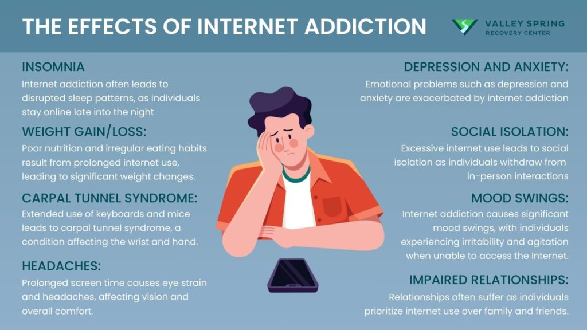

Digital wellbeing is the practice of managing technology use to promote positive physical, mental and emotional health. It involves maintaining a balanced relationship with digital devices and services by being mindful of screen time, managing digital distractions and using technology intentionally to enhance your life rather than letting it overwhelm you.
We need to practice digital wellbeing to stay healthy, focused and safe while using technology. Spending too much time on devices can cause stress, anxiety, poor sleep and eye strain. It can also reduce productivity and affect our mental and physical health.

By managing screen time, taking breaks and using technology mindfully, we can balance online and offline life, improve focus and enjoy the benefits of digital tools without harm.
Set limits on social media, games and apps to avoid spending too much time on devices. This helps prevent digital fatigue and keeps your daily routine balanced.
Take regular breaks from screens to relax your mind and body. Short breaks or device free periods help reduce stress and improve focus.
Pay attention to how and why you use devices. Being conscious of your online habits helps you make better choices and stay productive.
Interact positively online by avoiding negativity and practicing empathy. Respectful communication reduces stress and creates a safer digital environment.
Protect your personal data and accounts to stay safe online. Good privacy habits reduce risks and help you feel secure while using technology.